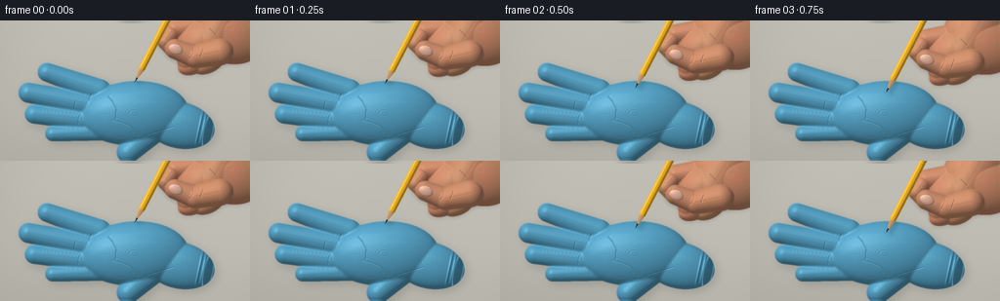
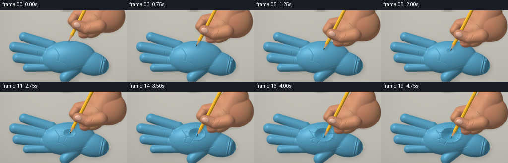
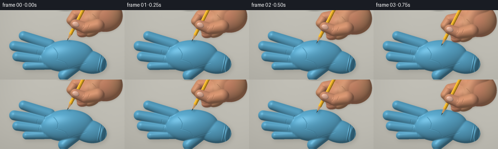
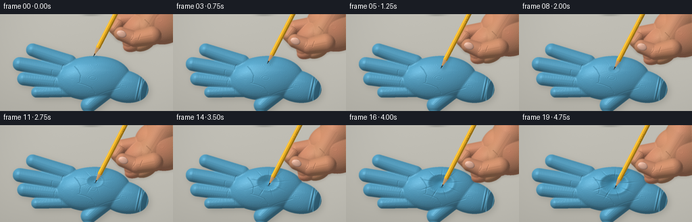

CODING AGENTS AS PIXEL WORLD MODELS
traex/GPT-6.1-Sol · mechanics_0034
点击播放 · 原生 RGB 像素
逐轮保存的候选
回放视频、检查图与代码变化。
每份候选均可单独播放。实际图片检查记录在下方工具轨迹中。
候选 01播放与检查图
点击播放 · 原生 RGB 像素


展开代码变化
--- 上一保存版本
+++ 本次保存版本
@@ -0,0 +1,207 @@
+from pathlib import Path
+import numpy as np
+from PIL import Image, ImageDraw, ImageFilter
+import artifact_io
+
+ROOT=Path(__file__).resolve().parent
+W,H,S=256,144,3
+Y,X=np.mgrid[0:H*S,0:W*S].astype(np.float32)/S
+rng=np.random.default_rng(18)
+noise=rng.normal(0,1,(H*S,W*S)).astype(np.float32)
+
+def blur(a,r):
+ return np.asarray(Image.fromarray(a.astype(np.float32),mode='F').filter(ImageFilter.GaussianBlur(r*S))) if False else np.asarray(Image.fromarray(np.uint8(np.clip(a,0,1)*255)).filter(ImageFilter.GaussianBlur(r*S))).astype(np.float32)/255
+
+def smooth_height(h,r):
+ return np.asarray(Image.fromarray(np.uint8(np.clip(h/45,0,1)*255)).filter(ImageFilter.GaussianBlur(r*S))).astype(np.float32)*45/255
+
+def ellipse(cx,cy,rx,ry,angle=0,height=15,xx=X,yy=Y):
+ a=np.deg2rad(angle);u=(xx-cx)*np.cos(a)+(yy-cy)*np.sin(a);v=-(xx-cx)*np.sin(a)+(yy-cy)*np.cos(a)
+ q=1-(u/rx)**2-(v/ry)**2
+ return np.sqrt(np.maximum(q,0))*height
+
+def capsule(a,b,r1,r2,height=10,xx=X,yy=Y):
+ ax,ay=a; bx,by=b; vx=bx-ax;vy=by-ay
+ t=np.clip(((xx-ax)*vx+(yy-ay)*vy)/(vx*vx+vy*vy),0,1)
+ r=r1+(r2-r1)*t
+ d2=(xx-ax-vx*t)**2+(yy-ay-vy*t)**2
+ return np.sqrt(np.clip(1-d2/(r*r),0,1))*height
+
+def over(im,col,alpha):
+ if np.ndim(col)==1: col=np.array(col)[None,None,:]
+ return im*(1-alpha[...,None])+col*alpha[...,None]
+
+def shade(height,base,mask,gloss=.15,texture=.45):
+ dy,dx=np.gradient(height,1/S)
+ norm=np.sqrt(1+dx*dx+dy*dy)
+ nx=-dx/norm;ny=-dy/norm;nz=1/norm
+ lam=np.clip(nx*-.43+ny*-.55+nz*.72,0,1)
+ spec=np.clip(nx*-.23+ny*-.30+nz*.925,0,1)**35
+ light=.55+.52*lam
+ color=np.array(base)[None,None,:]*light[...,None]+spec[...,None]*gloss*110
+ color+=noise[...,None]*texture
+ return np.clip(color,0,255)
+
+def line_mask(points,width=1):
+ im=Image.new('L',(W*S,H*S),0);d=ImageDraw.Draw(im)
+ d.line([(round(x*S),round(y*S)) for x,y in points],fill=255,width=max(1,round(width*S)),joint='curve')
+ return np.asarray(im).astype(np.float32)/255
+
+def polygon_mask(points):
+ im=Image.new('L',(W*S,H*S),0);ImageDraw.Draw(im).polygon([(round(x*S),round(y*S)) for x,y in points],fill=255)
+ return np.asarray(im).astype(np.float32)/255
+
+def bezier(points,n=80):
+ p=np.array(points);t=np.linspace(0,1,n)[:,None]
+ return (1-t)**3*p[0]+3*(1-t)**2*t*p[1]+3*(1-t)*t*t*p[2]+t**3*p[3]
+
+# A softly rounded, thin nitrile glove with five articulated fingers.
+gloveparts=[ellipse(137,95,56,33,-3,23),ellipse(183,107,37,24,13,16)]
+fingers=[((48,53),(102,72),9.6,12,9.5),((29,74),(101,88),10.3,12.5,10),((35,96),(103,103),9.8,11.7,9),((54,116),(110,113),8,10,8),((131,135),(158,110),11.7,15,13)]
+for a,b,r1,r2,h in fingers: gloveparts.append(capsule(a,b,r1,r2,h))
+glove_h=np.maximum.reduce(gloveparts)
+glove_mask=blur((glove_h>0).astype(np.float32),.35)
+glove_h=smooth_height(glove_h,1.25)
+# Raised, rolled wrist edge; rubber wrinkles subtly modulate the shape.
+for cx,cy,ang in [(204,111,12),(208,112,12)]:
+ u=(X-cx)*np.cos(np.deg2rad(ang))+(Y-cy)*np.sin(np.deg2rad(ang))
+ glove_h+=1.1*np.exp(-(u/1.1)**2)*np.exp(-((Y-cy)/22)**6)*glove_mask
+# Palm flexion lines, subtle, not painted outlines.
+for pts,width,depth in [([(110,77),(115,83),(119,91),(118,101)],.6,.9), ([(115,102),(126,105),(135,109),(141,118)],.8,.75), ([(147,119),(157,115),(168,112),(177,109)],.65,.6), ([(94,75),(92,78),(91,82)],.7,.7), ([(77,83),(76,88),(76,91)],.6,.7), ([(81,98),(80,102),(80,106)],.6,.6), ([(91,110),(91,114),(92,117)],.6,.6)]:
+ cr=blur(line_mask(pts,width),.35);glove_h-=cr*depth
+
+bg=np.zeros((H*S,W*S,3),np.float32)
+for k,c in enumerate([192,190,181]): bg[...,k]=c+7*(X/W)-13*(Y/H)+noise*.32
+# Out-of-focus tabletop, quiet natural studio surroundings.
+bg+=2*np.sin(X/39+Y/70)[...,None]
+shadow=blur(glove_mask,4.5)
+# shadow offset to lower right
+shadow=np.roll(np.roll(shadow,3*S,axis=0),3*S,axis=1)
+bg=over(bg,(94,96,90),shadow*.28)
+
+
+def skin_layer(im,dx,dy,front=False):
+ xx=X-dx; yy=Y-dy
+ if not front:
+ shapes=[ellipse(236,8,41,36,25,27,xx,yy), capsule((239,-15),(217,20),27,24,27,xx,yy),
+ ellipse(209,20,29,23,-29,25,xx,yy),
+ capsule((209,5),(179,8),13,10,13,xx,yy),
+ capsule((179,8),(169,21),10,8.5,12,xx,yy),
+ capsule((169,21),(178,31),8.5,7.8,11,xx,yy),
+ capsule((215,24),(192,41),12,11,14,xx,yy),
+ ellipse(198,44,17,11,-24,12,xx,yy),
+ ellipse(213,44,17,10,-24,12,xx,yy)]
+ else:
+ shapes=[capsule((225,32),(200,37),14,12,15,xx,yy), capsule((200,37),(179,29),12,10.2,13,xx,yy)]
+ hh=np.maximum.reduce(shapes);mask=blur((hh>0).astype(np.float32),.35);hh=smooth_height(hh,1)
+ # Skin creases follow the bending fingers.
+ paths=([[(175,8),(181,12),(182,17)],[(185,34),(188,37),(188,41)],[(200,36),(203,40),(204,45)],[(214,8),(221,15),(223,19)]] if not front else [[(198,28),(197,34),(194,39)],[(208,29),(206,34),(205,38)]])
+ for pts in paths:
+ m=blur(line_mask([(x+dx,y+dy) for x,y in pts],.65),.3)
+ hh-=.8*m
+ col=shade(hh,[205,142,108],mask,.12,.5)
+ # Warm translucent edges and small varied pigmentation.
+ col[...,0]+=4*np.sin(xx/9)*np.sin(yy/7)
+ col[...,1]+=2*np.sin(xx/8)
+ sh=blur(mask,1.8); sh=np.roll(sh,2*S,0)
+ im=over(im,(70,47,32),sh*.13)
+ im=over(im,col,mask)
+ if front:
+ # Thumbnail on the rounded distal thumb: inset ivory-pink and cuticle.
+ nh=ellipse(179.7+dx,29.3+dy,7.4,5.3,22,2.6)
+ nm=blur((nh>0).astype(np.float32),.25)
+ outer=blur((ellipse(179.7+dx,29.3+dy,8.0,5.9,22,1)>0).astype(np.float32),.3)
+ im=over(im,(163,99,80),outer*.32)
+ nc=shade(nh,[222,173,151],nm,.25,.1)
+ im=over(im,nc,nm)
+ arc=bezier([(173+dx,29+dy),(174+dx,24.3+dy),(179+dx,23.5+dy),(183+dx,26+dy)],30)
+ im=over(im,(244,213,193),blur(line_mask(arc,.6),.2)*.65)
+ return im
+
+
+def draw_pencil(im,tip):
+ # Hexagonal yellow wooden pencil, sharp exposed wood and fine graphite.
+ tx,ty=tip;axis=np.array([.46,-.888]);normal=np.array([.888,.46])
+ u=(X-tx)*axis[0]+(Y-ty)*axis[1]
+ v=(X-tx)*normal[0]+(Y-ty)*normal[1]
+ # pencil casts a soft narrow shadow on the rubber, moving with the point
+ sm=((u>0)&(u<66)&(np.abs(v-3.4)<3.2)).astype(np.float32)
+ sm=blur(sm,2.0)*glove_mask
+ im=over(im,(33,65,78),sm*.22)
+ r=3.4
+ shaft=((u>=16)&(u<130)&(np.abs(v)<=r)).astype(np.float32)
+ fac=np.where(v<-.9,1.05,np.where(v<1.25,.9,.62))
+ col=np.array([244,182,38])[None,None,:]*fac[...,None]
+ col=col+noise[...,None]*.7
+ im=over(im,col,shaft)
+ # thin specular stripe and darker edge, no thick graphic outline
+ edge=((u>16)&(np.abs(v+2.2)<.32)).astype(np.float32)
+ im=over(im,(255,221,116),edge*.75)
+ # sharpened cedar: taper from point to unpainted shoulder
+ wood=((u>=3.8)&(u<16)&(np.abs(v)<=r*u/16)).astype(np.float32)
+ wf=(.91-.18*v/r)+.025*np.sin(v*9+u*.35)
+ wc=np.array([209,162,111])[None,None,:]*wf[...,None]+noise[...,None]*.4
+ im=over(im,wc,wood)
+ # irregular paint/wood scallops around sharpening edge
+ scallop=((u>14.5+.5*np.cos(v*2))&(u<16.5)&(np.abs(v)<r)).astype(np.float32)
+ im=over(im,col,scallop)
+ lead=((u>=-.2)&(u<=4.8)&(np.abs(v)<(.12+.18*u))).astype(np.float32)
+ lc=np.zeros_like(im)+np.array([43,45,44])[None,None,:]
+ lc+=(np.clip(-v,0,1)*27)[...,None]
+ im=over(im,lc,lead)
+ # tiny printed marks on the lacquer, in perspective along the barrel.
+ for pos in [79,82,87,90]:
+ mark=((u>pos)&(u<pos+.65)&(v>.4)&(v<2.1)).astype(np.float32)
+ im=over(im,(110,85,29),mark*.7)
+ return im
+
+frames=[]
+for i in range(20):
+ t=i/19
+ # Slow continuous approach, then a steadily increasing elastic depression.
+ approach=min(t/.28,1)
+ ease=approach*approach*(3-2*approach)
+ p=max(0,(t-.28)/.72);p=p*p*(3-2*p)
+ tip=(138+2*ease+1.4*p,63+18*ease+13*p)
+ dx=tip[0]-138;dy=tip[1]-63
+ hh=glove_h.copy()
+ cx=140+.6*p;cy=81+5.8*p
+ rx=6+13*p;ry=4.2+9.5*p
+ q=((X-cx)/rx)**2+((Y-cy)/ry)**2
+ # A broad conical dimple, bright taut rim, and a deepening rounded bottom.
+ hh-=p*11.8*np.exp(-q*1.6)
+ hh+=p*1.25*np.exp(-((np.sqrt(q)-1.08)/.20)**2)
+ # Fine stretched folds radiating outward, not tears or punctures.
+ rr=np.sqrt(((X-cx)/1.15)**2+((Y-cy)/.85)**2)
+ aa=np.arctan2((Y-cy)/.85,(X-cx)/1.15)
+ ripple=np.maximum(np.cos(aa*9+.8),0)**20
+ hh-=p*.65*ripple*np.exp(-((rr-(12+7*p))/7.5)**2)
+ col=shade(hh,[85,159,193],glove_mask,.30,.28)
+ # Subsurface colour in the stretched membrane.
+ col+=np.exp(-q*1.1)[...,None]*p*np.array([-10,0,4])[None,None,:]
+ im=over(bg.copy(),col,glove_mask)
+ # Deep cuff opening with a thin elliptical rolled edge.
+ u=(X-213)*np.cos(.2)+(Y-114)*np.sin(.2)
+ v=-(X-213)*np.sin(.2)+(Y-114)*np.cos(.2)
+ cuff=((u/4.6)**2+(v/20.0)**2)
+ rim=np.exp(-((np.sqrt(cuff)-1)/.105)**2)*glove_mask
+ im=over(im,(100,177,208),rim*.72)
+ inside=blur((cuff<.69).astype(np.float32),.5)*glove_mask
+ im=over(im,(44,88,109),inside*.85)
+ # A tiny local shadow where the graphite compresses the taut rubber.
+ if p>0:
+ ct=np.exp(-((X-tip[0])/2.3)**2-((Y-tip[1]+.2)/1.2)**2)
+ im=over(im,(29,78,102),ct*(.28+.25*p))
+ im=skin_layer(im,dx,dy,False)
+ im=draw_pencil(im,tip)
+ im=skin_layer(im,dx,dy,True)
+ # Foreground stretched membrane hugs the very end as it sinks.
+ if p>.1:
+ lip=np.exp(-((X-tip[0]-.5)/1.1)**2-((Y-tip[1]-.0)/.45)**2)*p
+ im=over(im,(78,144,173),lip*.55)
+ # Gentle photographic vignette and subpixel antialiasing.
+ vig=1-.035*((X-128)/156)**2-.025*((Y-78)/104)**2
+ im=np.clip(im*vig[...,None],0,255).astype(np.uint8)
+ img=Image.fromarray(im).resize((W,H),Image.Resampling.LANCZOS)
+ frames.append(np.asarray(img))
+artifact_io.save(np.stack(frames),ROOT)
候选 02播放与检查图
点击播放 · 原生 RGB 像素


展开代码变化
--- 上一保存版本
+++ 本次保存版本
@@ -13,7 +13,17 @@
return np.asarray(Image.fromarray(a.astype(np.float32),mode='F').filter(ImageFilter.GaussianBlur(r*S))) if False else np.asarray(Image.fromarray(np.uint8(np.clip(a,0,1)*255)).filter(ImageFilter.GaussianBlur(r*S))).astype(np.float32)/255
def smooth_height(h,r):
- return np.asarray(Image.fromarray(np.uint8(np.clip(h/45,0,1)*255)).filter(ImageFilter.GaussianBlur(r*S))).astype(np.float32)*45/255
+ sigma=r*S
+ n=int(np.ceil(sigma*3))
+ k=np.exp(-np.arange(-n,n+1,dtype=np.float32)**2/(2*sigma*sigma));k/=k.sum()
+ out=h.copy()
+ for axis in (0,1):
+ pads=[(0,0),(0,0)];pads[axis]=(n,n)
+ a=np.pad(out,pads,mode='edge');out=np.zeros_like(h)
+ for j,w in enumerate(k):
+ sl=[slice(None),slice(None)];sl[axis]=slice(j,j+h.shape[axis])
+ out+=w*a[tuple(sl)]
+ return out
def ellipse(cx,cy,rx,ry,angle=0,height=15,xx=X,yy=Y):
a=np.deg2rad(angle);u=(xx-cx)*np.cos(a)+(yy-cy)*np.sin(a);v=-(xx-cx)*np.sin(a)+(yy-cy)*np.cos(a)
@@ -192,9 +202,9 @@
if p>0:
ct=np.exp(-((X-tip[0])/2.3)**2-((Y-tip[1]+.2)/1.2)**2)
im=over(im,(29,78,102),ct*(.28+.25*p))
- im=skin_layer(im,dx,dy,False)
+ im=skin_layer(im,dx-24,dy,False)
im=draw_pencil(im,tip)
- im=skin_layer(im,dx,dy,True)
+ im=skin_layer(im,dx-24,dy,True)
# Foreground stretched membrane hugs the very end as it sinks.
if p>.1:
lip=np.exp(-((X-tip[0]-.5)/1.1)**2-((Y-tip[1]-.0)/.45)**2)*p
可观测工具轨迹
实际执行的命令与返回图片。
命令 1exit 0
/bin/bash -lc 'ls -la && cat prompt.txt && cat GENERATION_RULES.md && cat task_spec.json'
命令 2exit 0
/bin/bash -lc 'cat artifact_io.py'
命令 3exit 0
/bin/bash -lc "cat > generate.py <<'PY'
from pathlib import Path
import numpy as np
from PIL import Image, ImageDraw, ImageFilter
import artifact_io
ROOT=Path(__file__).resolve().parent
W,H,S=256,144,3
Y,X=np.mgrid[0:H*S,0:W*S].astype(np.float32)/S
rng=np.random.default_rng(18)
noise=rng.normal(0,1,(H*S,W*S)).astype(np.float32)
def blur(a,r):
return np.asarray(Image.fromarray(a.astype(np.float32),mode='F').filter(ImageFilter.GaussianBlur(r*S))) if False else np.asarray(Image.fromarray(np.uint8(np.clip(a,0,1)*255)).filter(ImageFilter.GaussianBlur(r*S))).astype(np.float32)/255
def smooth_height(h,r):
return np.asarray(Image.fromarray(np.uint8(np.clip(h/45,0,1)*255)).filter(ImageFilter.GaussianBlur(r*S))).astype(np.float32)*45/255
def ellipse(cx,cy,rx,ry,angle=0,height=15,xx=X,yy=Y):
a=np.deg2rad(angle);u=(xx-cx)*np.cos(a)+(yy-cy)*np.sin(a);v=-(xx-cx)*np.sin(a)+(yy-cy)*np.cos(a)
q=1-(u/rx)**2-(v/ry)**2
return np.sqrt(np.maximum(q,0))*height
def capsule(a,b,r1,r2,height=10,xx=X,yy=Y):
ax,ay=a; bx,by=b; vx=bx-ax;vy=by-ay
t=np.clip(((xx-ax)*vx+(yy-ay)*vy)/(vx*vx+vy*vy),0,1)
r=r1+(r2-r1)*t
d2=(xx-ax-vx*t)**2+(yy-ay-vy*t)**2
return np.sqrt(np.clip(1-d2/(r*r),0,1))*height
def over(im,col,alpha):
if np.ndim(col)==1: col=np.array(col)[None,None,:]
return im*(1-alpha[...,None])+col*alpha[...,None]
def shade(height,base,mask,gloss=.15,texture=.45):
dy,dx=np.gradient(height,1/S)
norm=np.sqrt(1+dx*dx+dy*dy)
nx=-dx/norm;ny=-dy/norm;nz=1/norm
lam=np.clip(nx*-.43+ny*-.55+nz*.72,0,1)
spec=np.clip(nx*-.23+ny*-.30+nz*.925,0,1)**35
light=.55+.52*lam
color=np.array(base)[None,None,:]*light[...,None]+spec[...,None]*gloss*110
color+=noise[...,None]*texture
return np.clip(color,0,255)
def line_mask(points,width=1):
im=Image.new('L',(W*S,H*S),0);d=ImageDraw.Draw(im)
d.line([(round(x*S),round(y*S)) for x,y in points],fill=255,width=max(1,round(width*S)),joint='curve')
return np.asarray(im).astype(np.float32)/255
def polygon_mask(points):
im=Image.new('L',(W*S,H*S),0);ImageDraw.Draw(im).polygon([(round(x*S),round(y*S)) for x,y in points],fill=255)
return np.asarray(im).astype(np.float32)/255
def bezier(points,n=80):
p=np.array(points);t=np.linspace(0,1,n)[:,None]
return (1-t)**3*p[0]+3*(1-t)**2*t*p[1]+3*(1-t)*t*t*p[2]+t**3*p[3]
# A softly rounded, thin nitrile glove with five articulated fingers.
gloveparts=[ellipse(137,95,56,33,-3,23),ellipse(183,107,37,24,13,16)]
fingers=[((48,53),(102,72),9.6,12,9.5),((29,74),(101,88),10.3,12.5,10),((35,96),(103,103),9.8,11.7,9),((54,116),(110,113),8,10,8),((131,135),(158,110),11.7,15,13)]
for a,b,r1,r2,h in fingers: gloveparts.append(capsule(a,b,r1,r2,h))
glove_h=np.maximum.reduce(gloveparts)
glove_mask=blur((glove_h>0).astype(np.float32),.35)
glove_h=smooth_height(glove_h,1.25)
# Raised, rolled wrist edge; rubber wrinkles subtly modulate the shape.
for cx,cy,ang in [(204,111,12),(208,112,12)]:
u=(X-cx)*np.cos(np.deg2rad(ang))+(Y-cy)*np.sin(np.deg2rad(ang))
glove_h+=1.1*np.exp(-(u/1.1)**2)*np.exp(-((Y-cy)/22)**6)*glove_mask
# Palm flexion lines, subtle, not painted outlines.
for pts,width,depth in [([(110,77),(115,83),(119,91),(118,101)],.6,.9), ([(115,102),(126,105),(135,109),(141,118)],.8,.75), ([(147,119),(157,115),(168,112),(177,109)],.65,.6), ([(94,75),(92,78),(91,82)],.7,.7), ([(77,83),(76,88),(76,91)],.6,.7), ([(81,98),(80,102),(80,106)],.6,.6), ([(91,110),(91,114),(92,117)],.6,.6)]:
cr=blur(line_mask(pts,width),.35);glove_h-=cr*depth
bg=np.zeros((H*S,W*S,3),np.float32)
for k,c in enumerate([192,190,181]): bg[...,k]=c+7*(X/W)-13*(Y/H)+noise*.32
# Out-of-focus tabletop, quiet natural studio surroundings.
bg+=2*np.sin(X/39+Y/70)[...,None]
shadow=blur(glove_mask,4.5)
# shadow offset to lower right
shadow=np.roll(np.roll(shadow,3*S,axis=0),3*S,axis=1)
bg=over(bg,(94,96,90),shadow*.28)
def skin_layer(im,dx,dy,front=False):
xx=X-dx; yy=Y-dy
if not front:
shapes=[ellipse(236,8,41,36,25,27,xx,yy), capsule((239,-15),(217,20),27,24,27,xx,yy),
ellipse(209,20,29,23,-29,25,xx,yy),
capsule((209,5),(179,8),13,10,13,xx,yy),
capsule((179,8),(169,21),10,8.5,12,xx,yy),
capsule((169,21),(178,31),8.5,7.8,11,xx,yy),
capsule((215,24),(192,41),12,11,14,xx,yy),
ellipse(198,44,17,11,-24,12,xx,yy),
ellipse(213,44,17,10,-24,12,xx,yy)]
else:
shapes=[capsule((225,32),(200,37),14,12,15,xx,yy), capsule((200,37),(179,29),12,10.2,13,xx,yy)]
hh=np.maximum.reduce(shapes);mask=blur((hh>0).astype(np.float32),.35);hh=smooth_height(hh,1)
# Skin creases follow the bending fingers.
paths=([[(175,8),(181,12),(182,17)],[(185,34),(188,37),(188,41)],[(200,36),(203,40),(204,45)],[(214,8),(221,15),(223,19)]] if not front else [[(198,28),(197,34),(194,39)],[(208,29),(206,34),(205,38)]])
for pts in paths:
m=blur(line_mask([(x+dx,y+dy) for x,y in pts],.65),.3)
hh-=.8*m
col=shade(hh,[205,142,108],mask,.12,.5)
# Warm translucent edges and small varied pigmentation.
col[...,0]+=4*np.sin(xx/9)*np.sin(yy/7)
col[...,1]+=2*np.sin(xx/8)
sh=blur(mask,1.8); sh=np.roll(sh,2*S,0)
im=over(im,(70,47,32),sh*.13)
im=over(im,col,mask)
if front:
# Thumbnail on the rounded distal thumb: inset ivory-pink and cuticle.
nh=ellipse(179.7+dx,29.3+dy,7.4,5.3,22,2.6)
nm=blur((nh>0).astype(np.float32),.25)
outer=blur((ellipse(179.7+dx,29.3+dy,8.0,5.9,22,1)>0).astype(np.float32),.3)
im=over(im,(163,99,80),outer*.32)
nc=shade(nh,[222,173,151],nm,.25,.1)
im=over(im,nc,nm)
arc=bezier([(173+dx,29+dy),(174+dx,24.3+dy),(179+dx,23.5+dy),(183+dx,26+dy)],30)
im=over(im,(244,213,193),blur(line_mask(arc,.6),.2)*.65)
return im
def draw_pencil(im,tip):
# Hexagonal yellow wooden pencil, sharp exposed wood and fine graphite.
tx,ty=tip;axis=np.array([.46,-.888]);normal=np.array([.888,.46])
u=(X-tx)*axis[0]+(Y-ty)*axis[1]
v=(X-tx)*normal[0]+(Y-ty)*normal[1]
# pencil casts a soft narrow shadow on the rubber, moving with the point
sm=((u>0)&(u<66)&(np.abs(v-3.4)<3.2)).astype(np.float32)
sm=blur(sm,2.0)*glove_mask
im=over(im,(33,65,78),sm*.22)
r=3.4
shaft=((u>=16)&(u<130)&(np.abs(v)<=r)).astype(np.float32)
fac=np.where(v<-.9,1.05,np.where(v<1.25,.9,.62))
col=np.array([244,182,38])[None,None,:]*fac[...,None]
col=col+noise[...,None]*.7
im=over(im,col,shaft)
# thin specular stripe and darker edge, no thick graphic outline
edge=((u>16)&(np.abs(v+2.2)<.32)).astype(np.float32)
im=over(im,(255,221,116),edge*.75)
# sharpened cedar: taper from point to unpainted shoulder
wood=((u>=3.8)&(u<16)&(np.abs(v)<=r*u/16)).astype(np.float32)
wf=(.91-.18*v/r)+.025*np.sin(v*9+u*.35)
wc=np.array([209,162,111])[None,None,:]*wf[...,None]+noise[...,None]*.4
im=over(im,wc,wood)
# irregular paint/wood scallops around sharpening edge
scallop=((u>14.5+.5*np.cos(v*2))&(u<16.5)&(np.abs(v)<r)).astype(np.float32)
im=over(im,col,scallop)
lead=((u>=-.2)&(u<=4.8)&(np.abs(v)<(.12+.18*u))).astype(np.float32)
lc=np.zeros_like(im)+np.array([43,45,44])[None,None,:]
lc+=(np.clip(-v,0,1)*27)[...,None]
im=over(im,lc,lead)
# tiny printed marks on the lacquer, in perspective along the barrel.
for pos in [79,82,87,90]:
mark=((u>pos)&(u<pos+.65)&(v>.4)&(v<2.1)).astype(np.float32)
im=over(im,(110,85,29),mark*.7)
return im
frames=[]
for i in range(20):
t=i/19
# Slow continuous approach, then a steadily increasing elastic depression.
approach=min(t/.28,1)
ease=approach*approach*(3-2*approach)
p=max(0,(t-.28)/.72);p=p*p*(3-2*p)
tip=(138+2*ease+1.4*p,63+18*ease+13*p)
dx=tip[0]-138;dy=tip[1]-63
hh=glove_h.copy()
cx=140+.6*p;cy=81+5.8*p
rx=6+13*p;ry=4.2+9.5*p
q=((X-cx)/rx)**2+((Y-cy)/ry)**2
# A broad conical dimple, bright taut rim, and a deepening rounded bottom.
hh-=p*11.8*np.exp(-q*1.6)
hh+=p*1.25*np.exp(-((np.sqrt(q)-1.08)/.20)**2)
# Fine stretched folds radiating outward, not tears or punctures.
rr=np.sqrt(((X-cx)/1.15)**2+((Y-cy)/.85)**2)
aa=np.arctan2((Y-cy)/.85,(X-cx)/1.15)
ripple=np.maximum(np.cos(aa*9+.8),0)**20
hh-=p*.65*ripple*np.exp(-((rr-(12+7*p))/7.5)**2)
col=shade(hh,[85,159,193],glove_mask,.30,.28)
# Subsurface colour in the stretched membrane.
col+=np.exp(-q*1.1)[...,None]*p*np.array([-10,0,4])[None,None,:]
im=over(bg.copy(),col,glove_mask)
# Deep cuff opening with a thin elliptical rolled edge.
u=(X-213)*np.cos(.2)+(Y-114)*np.sin(.2)
v=-(X-213)*np.sin(.2)+(Y-114)*np.cos(.2)
cuff=((u/4.6)**2+(v/20.0)**2)
rim=np.exp(-((np.sqrt(cuff)-1)/.105)**2)*glove_mask
im=over(im,(100,177,208),rim*.72)
inside=blur((cuff<.69).astype(np.float32),.5)*glove_mask
im=over(im,(44,88,109),inside*.85)
# A tiny local shadow where the graphite compresses the taut rubber.
if p>0:
ct=np.exp(-((X-tip[0])/2.3)**2-((Y-tip[1]+.2)/1.2)**2)
im=over(im,(29,78,102),ct*(.28+.25*p))
im=skin_layer(im,dx,dy,False)
im=draw_pencil(im,tip)
im=skin_layer(im,dx,dy,True)
# Foreground stretched membrane hugs the very end as it sinks.
if p>.1:
lip=np.exp(-((X-tip[0]-.5)/1.1)**2-((Y-tip[1]-.0)/.45)**2)*p
im=over(im,(78,144,173),lip*.55)
# Gentle photographic vignette and subpixel antialiasing.
vig=1-.035*((X-128)/156)**2-.025*((Y-78)/104)**2
im=np.clip(im*vig[...,None],0,255).astype(np.uint8)
img=Image.fromarray(im).resize((W,H),Image.Resampling.LANCZOS)
frames.append(np.asarray(img))
artifact_io.save(np.stack(frames),ROOT)
PY
python generate.py"命令 4exit 0
/bin/bash -lc "python - <<'PY'
p='generate.py'
s=open(p).read()
s=s.replace(\"def smooth_height(h,r):\\n return np.asarray(Image.fromarray(np.uint8(np.clip(h/45,0,1)*255)).filter(ImageFilter.GaussianBlur(r*S))).astype(np.float32)*45/255\", \"def smooth_height(h,r):\\n sigma=r*S\\n n=int(np.ceil(sigma*3))\\n k=np.exp(-np.arange(-n,n+1,dtype=np.float32)**2/(2*sigma*sigma));k/=k.sum()\\n out=h.copy()\\n for axis in (0,1):\\n pads=[(0,0),(0,0)];pads[axis]=(n,n)\\n a=np.pad(out,pads,mode='edge');out=np.zeros_like(h)\\n for j,w in enumerate(k):\\n sl=[slice(None),slice(None)];sl[axis]=slice(j,j+h.shape[axis])\\n out+=w*a[tuple(sl)]\\n return out\")
s=s.replace('skin_layer(im,dx,dy,False)','skin_layer(im,dx-24,dy,False)').replace('skin_layer(im,dx,dy,True)','skin_layer(im,dx-24,dy,True)')
open(p,'w').write(s)
PY
python generate.py"视觉工具实际返回图片 1

视觉工具实际返回图片 2

保存候选 2 份；完成命令 4 次；可验证图片返回 2 张。原始 API 响应与完整日志保留在本地。